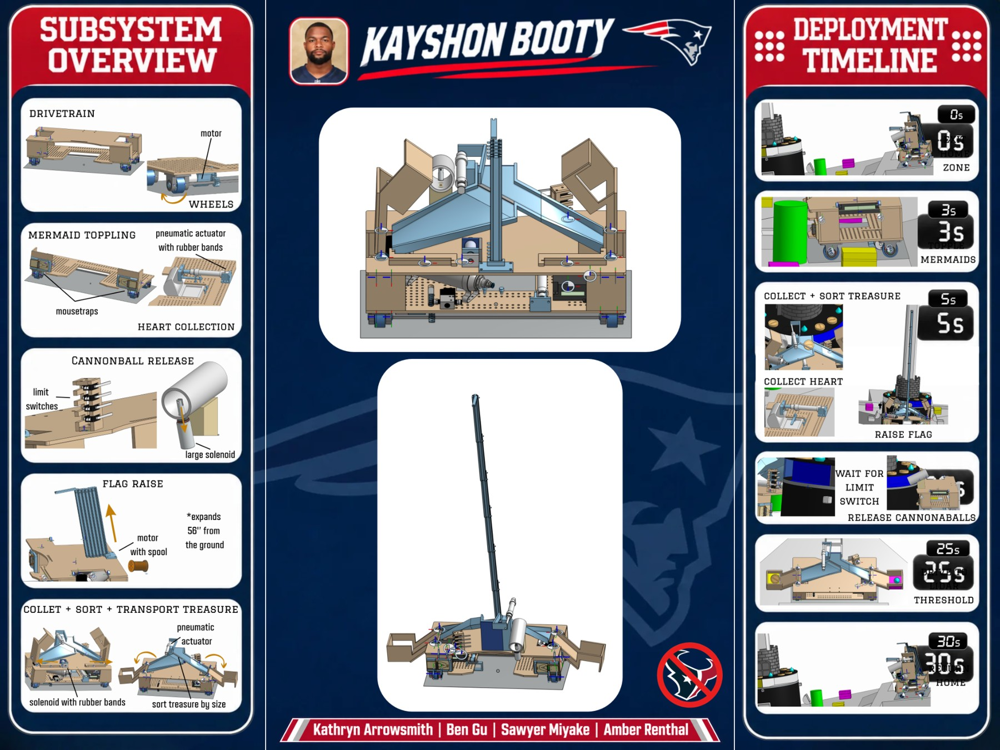
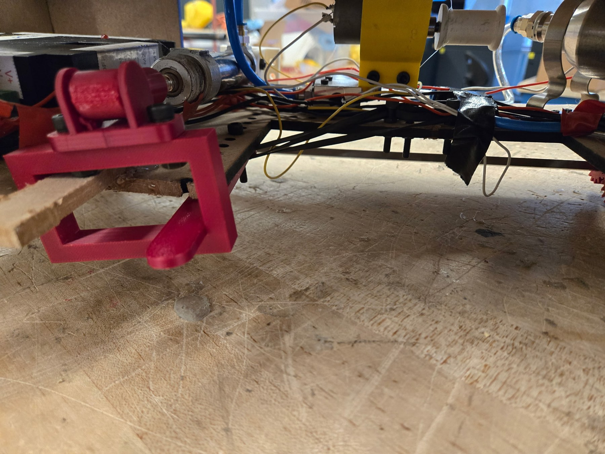
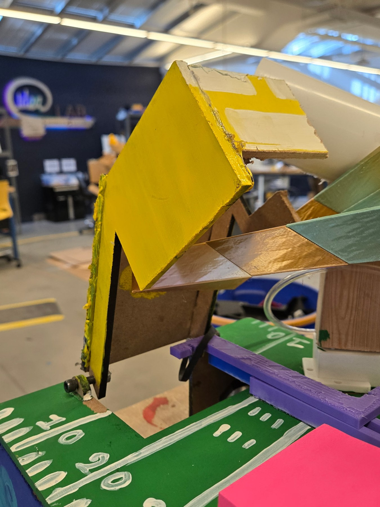
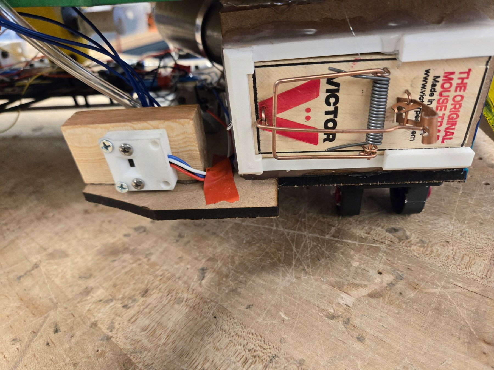
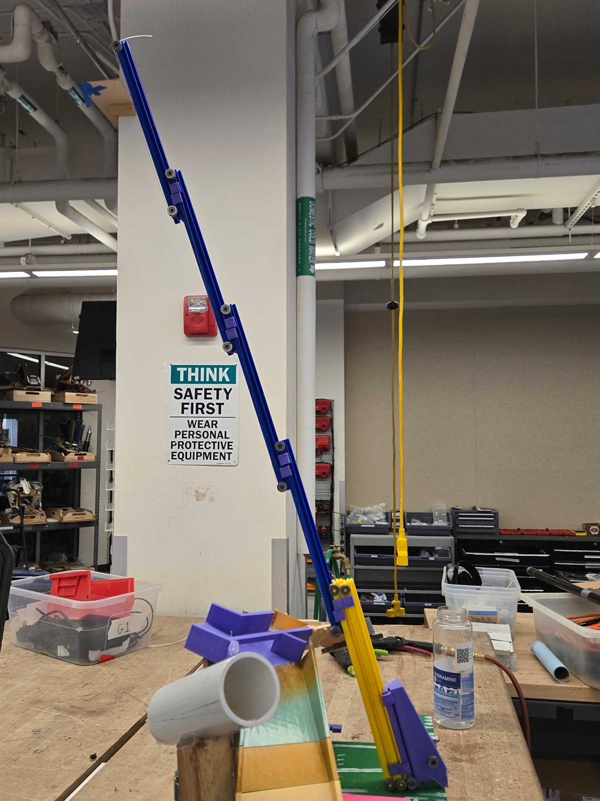
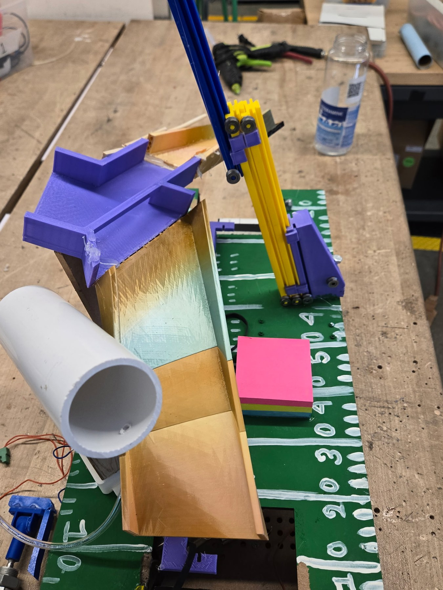
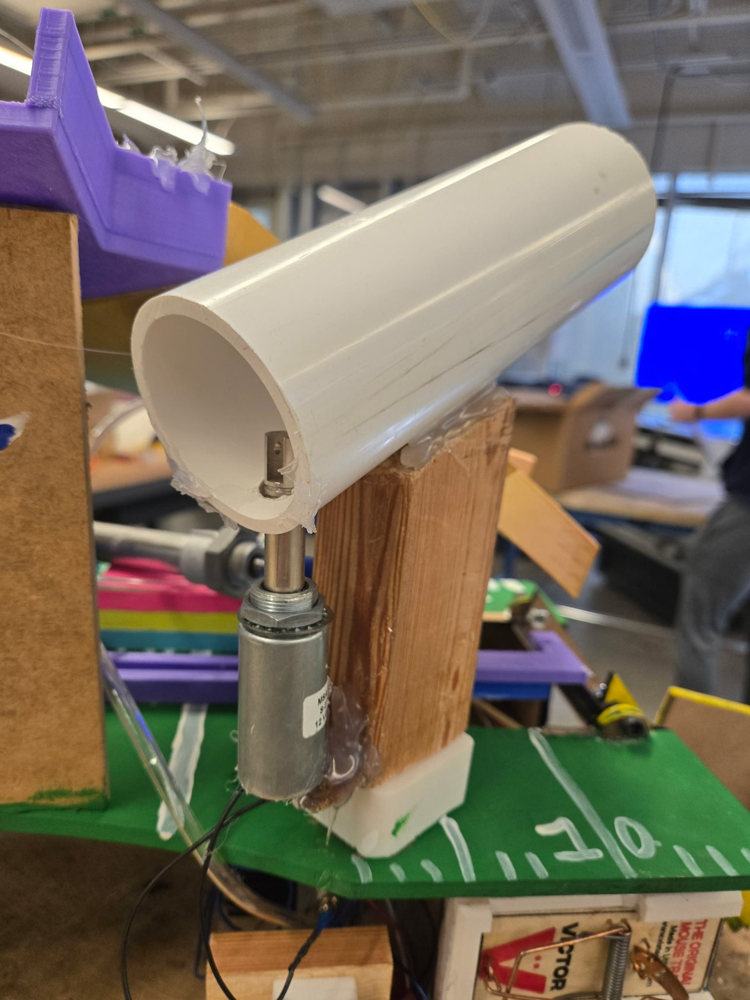
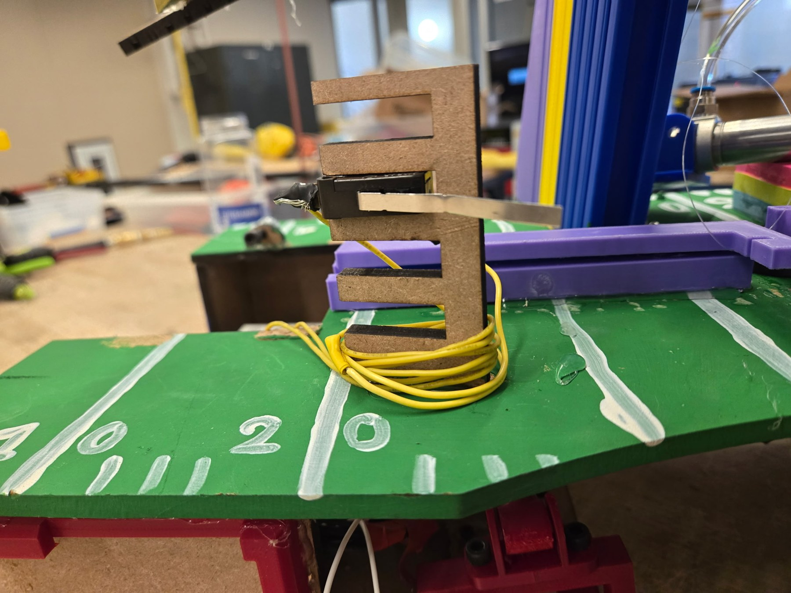
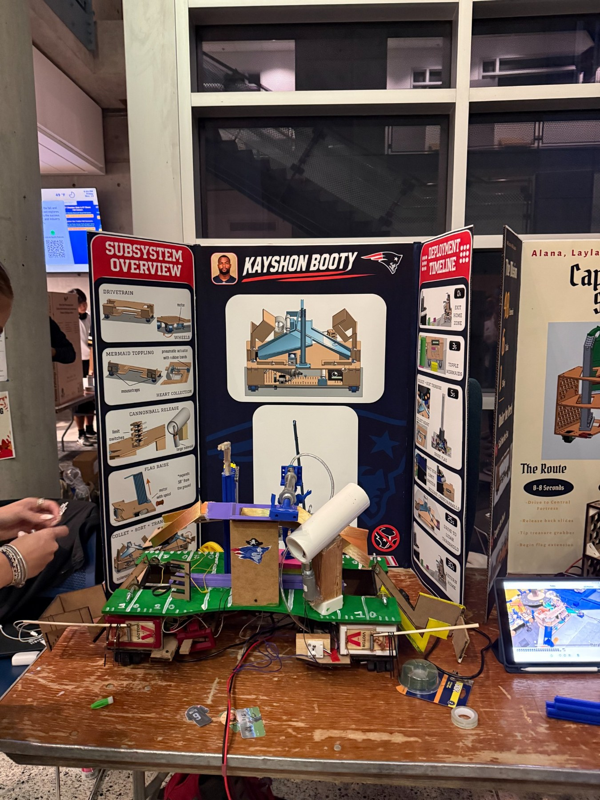

FEATURED PROJECT / AUTONOMOUS ROBOTICS
ME 2110 Robotics Competition
Georgia Tech · ME 2110, Section A05 · Fall 2026 · Team 3: Kayshon Booty
Design challenge
Our four-person team designed an autonomous robot to complete navigation and object-manipulation tasks in a 40-second competition. We prioritized low-cost, manufacturable mechanisms, passive actuation and reliable movement.
CAD · 3D PRINTING · LASER CUTTING · MECHATRONICS · DESIGN ANALYSIS


My contributions
I contributed to the House of Quality, created and revised morphological charts and the function tree, developed the design strategy and concept analysis, and wrote the final fabrication section. I also contributed to the final abstract, competition results and editing of the team report.
Team members: Kathryn Arrowsmith, Zhu Gu, Sawyer Miyake and Amber Renthal. Contributions are based on the report's statements on pages 36–37.
Engineering design & iteration
We translated competition goals into measurable requirements using a House of Quality, function tree, specification sheet, morphological chart and concept evaluation matrices. The highest-ranked requirements emphasized rapid loading-zone exit, travel speed and electrical safety.
Drivetrain
Replaced a belt transmission with gears, metal bearings and square-to-round adapters to improve torque transfer and alignment.
Mermaid topplers
Used chassis-mounted mousetraps for passive spring actuation.
Cannonball delivery
Replaced a bulky tipping bucket with a compact PVC chute and solenoid release triggered by a limit switch.
Treasure sorting
Used pneumatic collection and gravity-fed channels to separate coins and jewels by size.
Heart retrieval
Replaced a motorized claw with a pneumatic actuator and 3D-printed arm.
Flag lift
Designed a motor-driven cascade lift with telescoping rails and string-and-spool actuation.
Prototype gallery
Select any photograph to see a larger version.








Testing & outcomes
Repeated testing showed substantial improvements in several subsystems. The results below compare Sprint 3 and final precompetition simulations, not competition scores.
| Subsystem | Sprint 3 | Final simulation |
|---|---|---|
| Drivetrain speed | 0/10 | 10/10 |
| Lateral drift | 7/10 | 9/10 |
| Cannonball delivery | 0/10 | 7/10 |
| Mermaid toppling | 5/10 | 7/10 |
| Heart collection | 9/10 | 9/10 |
| Flag deployment | 5/10 | 8/10 |
| Gold and jewel collection | 0/10 | 0/10 |
Source: final report, Tables 5–6. Some test thresholds changed between iterations.
Lessons from competition day
Both competition rounds ended in disqualification: the first because of premature deployment during boxing, and the second due to electrical power issues. Although individual mechanisms performed well in testing, full-system reliability remained a challenge. Future work would prioritize secure mounting, electrical connections, earlier integration and realistic competition-condition testing.